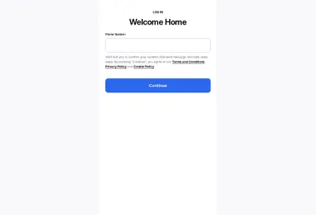

Как Dwelly использует свою платформу
Dwelly покупает агентства долгосрочной аренды в Великобритании и переводит их бэк-офис на свою платформу: приём обращений, ремонты, платежи, комплаенс. Платформа внутренняя: демо-кабинета, пробного доступа и публичного API нет, войти можно только как арендатор, собственник или подрядчик реального агентства Dwelly (устройство кабинетов — в разделе о продукте). Основатель Илья Дроздов объясняет, почему софт не продаётся:
«If you sell the software, you get one and a half, 2% of the P&L of the agency. If you own an agency and deliver the full end-to-end service, you get 100% of the P&L.» — Если продаёшь софт, получаешь полтора-два процента прибыли агентства. Если владеешь агентством и сам оказываешь весь сервис, получаешь 100% прибыли.
Илья Дроздов, Fortune, 25.02.2026
При этом на сайте Dwelly есть страница для владельцев агентств с кнопкой «Platform your agency» («Переведите агентство на платформу»). В вакансии Head of Community описано сообщество владельцев агентств, которых месяцами и годами готовят к продаже; второе назначение сообщества — «giving owners with no intention of selling a reason to become active users» («дать владельцам, не намеренным продавать, причину стать активными пользователями» платформы)2. Условия такого доступа, в том числе доля прибыли партнёра, публично не подтверждены (на 07.10.2026). Платформа для агентств у Dwelly служит входом в воронку покупок, отдельной выручки от неё в открытых данных нет.



Как зарабатывают онлайн-платформы и управляющие
Рядом с Dwelly на рынке аренды работают модели, где компания вообще не держит людей на объекте: витрина с софтом для хоста, посредник дистрибуции для агентств, управляемый маркетплейс. Таблица сводит семь типов моделей по тому, кто платит и кто выполняет работу на месте.
| Модель | Пример | Стороны | Кто платит | Чем зарабатывает | Кто работает на объекте |
|---|---|---|---|---|---|
| Маркетплейс спроса (OTA) | Airbnb, Booking.com, Vrbo | гости ↔ хосты и управляющие | хост (и гость у части площадок) | % с брони | хост или управляющий |
| Витрина + софт для хоста | Holidu | гости ↔ хосты | хост | 6% + комиссия канала | хост |
| Посредник дистрибуции для агентств | PopConnect | площадки ↔ агентства | агентство | % с брони | агентство |
| Управляемый маркетплейс долгосрочной аренды | Яндекс Аренда | арендаторы ↔ собственники (+ риелторы) | арендатор (наценка ~10% на примере сайта) | наценка к аренде | сервис и риелторы-партнёры; событий мало |
| Сервис с полной операционкой | Interhome, Winahost, местные управляющие Коста-Бравы | собственники ↔ гости | собственник (и гость через плату за уборку) | % GBV + уборка | свой штат и подрядчики |
| Покупка агентств + внутренняя платформа | Dwelly | собственники ↔ арендаторы | собственник | % арендного потока (~5–8%) | сотрудники купленных агентств |
| SaaS | Guesty, Hostaway, Avantio | одна сторона | управляющий | € за объект в месяц или % выручки | клиент |
В этой классификации управляющая компания с полной операционкой сама выполняет обмен между собственником и гостем: цену, платежи, налоги, уборку. Признаки маркетплейса у неё появляются только при подключении третьих сторон, которые сами делают работу: агентств-партнёров, независимых клинеров, ко-хостов (гипотеза).
Сводная таблица компаний
| Компания | Модель | Кто работает на месте | Доход на объект / ставка | Масштаб | Штат | Финансирование |
|---|---|---|---|---|---|---|
| Holidu (Holidu Host, ранее Bookiply) | Витрина-метапоиск + PMS и канал-менеджер + лёгкий местный сервис | Хост (уборка, ключи); Holidu — фото, настройка, поддержка 24/7 онлайн, местные офисы для привлечения | 6% с брони (до 3% со скидками) + комиссия канала от 15%; подключение от €903 | 45 000+ объектов в управлении (02.2025); 35 000+ хостов (сайт, 10.2026); 29 офисов в Европе, 7 в Испании | 600+ (06.2025) | €100 млн Series E + €25 млн долг (10.2022)5; €46 млн (06.2025) |
| PopConnect (бренд Poplidays) | Дистрибуция для агентств недвижимости: размещение на 20+ площадках | Агентство-партнёр | «0 frais fixe, 0 abonnement, 100% à la performance» (без фиксированной платы и абонплаты, только за результат); % не опубликован11 | 2015: ~20 000 объектов от 200 агентств (FR, ES, IT, PT); новых данных нет | не найдено | €2 млн (2013), €3 млн (04.2015) |
| Яндекс Аренда | Управляемый маркетплейс долгосрочной аренды (РФ) | Яндекс и риелторы-партнёры: фото, 3D-тур, показы, проверка, договор | Собственнику бесплатно; наценка для арендатора (пример: 30 000 → 33 000 ₽, 10%)13 | 40 000 сданных квартир за 4 года; 450+ квартир в неделю; 8 городов партнёрской программы (09.2024) | не найдено | внутри «Яндекса» |
| Dwelly (справочно) | Покупка агентств + внутренняя ИИ-платформа (долгосрочная аренда, Великобритания) | Сотрудники купленных агентств + центральные функции | ~5–8% арендного потока: £1 200–1 800 выручки на объект в год | 15 000+ объектов (07–09.2026), 20 агентств | ~300 (02.2026) | £32 млн + £37 млн долг (02.2026); $170 млн Series B (07.2026) |
| Guesty | SaaS для управляющих | Клиент | Lite от $9 за объявление в месяц (1–3 объявления); Pro и Enterprise по запросу, оценка ~$45+ | не собиралось | не собиралось | не собиралось |
| Hostaway | SaaS для управляющих | Клиент | По запросу; оценка ~$20–40 за объявление; вариант 2% месячной выручки; медиана ~$10 000 в год | не собиралось | не собиралось | не собиралось |
| Avantio | SaaS для управляющих, Испания | Клиент | От $15 в месяц; остальное по запросу | «24+ года»; клиенты от 20 до 800+ объектов (сайт) | не подтверждено | не собиралось |
Объектов на сотрудника: Holidu ~75 (45 000 / 600, расчёт; часть штата Holidu занята маркетплейсом, а уборку и ключи держит хост, поэтому показатель не сравним с полным управлением), Dwelly ~33–54 (расчёт).
Holidu
Holidu (Мюнхен, основана в 2014 г.) предлагает хосту «Free to start · No fixed costs» («начать бесплатно, без постоянных затрат»): один календарь для Airbnb, Booking.com и 25+ каналов, общий ящик сообщений, автоответы, фотосессию при подключении, защиту от ущерба до €50 000 и поддержку местной команды4. Ставка 6% с подтверждённой брони снижается до 3%: −1 п.п. за эксклюзивность, до −2 п.п. за объём; прямые брони — только 6%; отдельного тарифа для управляющих компаний на странице цен нет3. Уборка и ключи на странице хоста не упоминаются: операционка на месте остаётся на хосте, местные офисы заняты привлечением и настройкой объектов (вывод средней уверенности). Компания работает с прибылью с мая 2020 г. (на 10.2021)9.
В Испании Holidu растёт покупками порталов. В Андалусии число объектов выросло с 400 (2021) до 4 000+ (2024), выручка региона +44% в 2024 г.8 В поясе Begur–Pals–Cadaqués у Holidu 6 домов26.
| Дата | Покупка | Что дала |
|---|---|---|
| 21.10.2021 | Spain-Holiday | портал; объединён с Bookiply9 |
| 2024 | Clubrural | ~28 000 объектов сельского туризма; офис в Мадриде7 |
| 04.2025 | Finca Mallorca | ~200 объектов; на Балеарах у Holidu ~3 000 объектов6 |
| 06.2025 | Cybevasion (Франция) | 35 000+ объектов, 20 млн визитов в год10 |
PopConnect (Poplidays)
PopConnect берёт объекты агентств недвижимости, управляющих и консьерж-сервисов и размещает их на 20+ площадках: Airbnb, Booking.com, Vrbo/Abritel, HomeToGo, Holidu, Google Vacation Rentals, Leboncoin, Tripadvisor и испанских Hispanoa, Iberimo; календари и цены синхронизируются через PMS агентства11. Агентство остаётся управляющим и держит собственника, PopConnect получает процент с брони. В 2015 г. у Poplidays было ~20 000 квартир и вилл только от 200 агентств-партнёров, ~100 объектов на агентство (расчёт), рост броней +150% за 2014 г.12
Яндекс Аренда
Сервис запущен 01.06.2021 в Москве и области15. Трудная сторона — собственник: его привлекают нулевой комиссией, выплатой в срок даже при задержке арендатора (с 04.2022) и страховкой — 1 месяц аренды при неуплате или поломке, до 300 000 ₽ ущерба соседям, до 350 000 ₽ при затоплении13. Платит арендатор: 5% в месяц на запуске, на сайте сейчас пример с наценкой 10%; доход сервиса — 3 000 ₽ в месяц, 36 000 ₽ в год на квартиру до выплат партнёрам и страхования (расчёт). Риелторы-партнёры получают до 50% первого платежа арендатора в Москве и до 70% в регионах; в пилоте ~700 риелторов, 95% квартир в Москве, Санкт-Петербурге и областях сдаются полностью онлайн14. Жалобы собственников: ранний выезд арендатора, состояние квартиры после выезда, слабое вмешательство в споры16.
Сколько берут площадки и софт
Онлайн-платформы для управляющей компании одновременно конкуренты за собственника и каналы продажи ночей. Ставка площадки определяет, сколько остаётся с брони; цена софта — сколько стоит инструмент, на котором держится учёт. Стоимость посчитана на условной брони в €1 000, чтобы ставки были сравнимы.
| Площадка | Ставка | Стоимость с брони €1 000 (расчёт) |
|---|---|---|
| Airbnb (host-only для хостов с PMS с 27.10.2025) | 15,5%22 | €155 |
| Booking.com | ~15% + 2,2% платёжный сбор23 | €172 |
| Vrbo | 5% + 3% карта или подписка $499 в год23 | €80 |
| Holidu (условия для хоста) | 6% | €60; условия для управляющих не проверены |
| Прямая бронь | эквайринг ~1,5% (допущение) + маркетинг (не оценён) | €15 + маркетинг |
Расчёт по таблице: Holidu и Vrbo дешевле Airbnb и Booking.com на €75–112 с каждой €1 000 брони. Для Holidu как канала управляющей компании не известны ставка, владелец данных гостя и требование эксклюзивности. Дистрибуторы по типу PopConnect добавляют посредника между управляющим и площадкой, их ставка не опубликована. Как конкурент за собственника Holidu дешевле классического управления: 6% с брони против 12–32% комиссии, которые собственники называют у управляющих компаний в отзывах (раздел об удержании); уборка и ключи при этом остаются на хосте.
Цены софта для управляющих
Публичная цена есть только в нижнем сегменте (Guesty Lite); для управляющих с десятками объектов цена договорная.
| Продукт | Модель цены | Цена | Тип источника, дата |
|---|---|---|---|
| Guesty Lite | за объявление в месяц | от $9 (1–3 объявления)17 | оператор, 07.10.2026 |
| Guesty Pro / Enterprise | по запросу | оценка ~$45+ за объявление18 | сторонний обзор, 04.2026 |
| Hostaway | по запросу; вариант % выручки | ~$20–40 за объявление (20–100 объявлений); вариант 2% месячной выручки; подключение $100–50018 | сторонний обзор, 09.2025 |
| Hostaway | по запросу | медианный контракт ~$10 000 в год (11 сделок); подключение $0–2 00019 | сторонний обзор, 14.06.2026 |
| Avantio | по запросу | от $15 в месяц (PMS и канал-менеджер)20; партнёр Airbnb, Booking.com, Vrbo (2026) | каталог, 07.10.2026 |
| RentalReady (софт GuestReady) | по запросу, от объёма портфеля | не опубликована; разовый платёж за подключение; модули: ИИ-почта Maia, сайт, раздельные платежи, гости 24/727 | оператор, 07.10.2026 |
| Holidu Host | % с брони | 6% (до 3%) + комиссия канала от 15%; подключение от €903 | оператор, 07.10.2026 |
| PopConnect | только за результат | % не опубликован11 | оператор, 07.10.2026 |
Почему без людей на месте работает только при редких событиях
Решающая переменная для модели без полевого персонала — частота событий на объекте. У Яндекс Аренды и Dwelly один арендатор живёт 1–3 года; в посуточной аренде в сезон гости меняются каждые несколько дней, и каждый заезд нужно закрыть людьми или подрядчиком. Остальные условия — кто несёт операционку, есть ли партнёры на месте и как контролируется качество.
| Условие | Работает у | Ломается у | Перенос на посуточную аренду |
|---|---|---|---|
| Мало событий на объекте | Яндекс Аренда, Dwelly (один арендатор ~1–3 года) | посуточная аренда: заезд каждые несколько дней в сезон | каждое событие закрывает человек или подрядчик |
| Операционку несёт другая сторона | Holidu (хост), PopConnect (агентство), Weguest (собственник держит уборку в части тарифов) | когда собственник ждёт услугу «под ключ» | онлайн-тарифы управляющих, где собственник сам держит уборку и ключи, а управляющая ведёт цену, каналы и гостей |
| Партнёры на месте за долю | Яндекс Аренда (риелторы), Casago (франчайзи переняли 89% полевого персонала Vacasa) | при централизации без местных партнёров | пул местных подрядчиков с бонусами и штрафами (по образцу Weguest) |
| Контроль качества | — | Vacasa: 44 141 → 32 131 объект после централизации; Lime Property (Dwelly) 2,1 на Trustpilot; жалобы собственников на уборку — 51–57% негативных отзывов у Weguest и GuestReady | уборка — самая частая тема жалоб; без контроля качество падает быстрее, чем растёт масштаб |
Из этих условий следуют три способа расти без пропорционального роста штата (варианты с условиями). Первый — разделить работу на онлайн-слой (цена, каналы, гости, отчёты, бухгалтерия), который централизуется софтом, и полевой слой (уборка, ключи, ремонт), который уходит партнёрам за долю; условие — метрика качества заезда по каждому партнёру и право его заменить. Второй — онлайн-управление для объектов вне зоны офисов по модели Holidu; условие — у собственника есть свой исполнитель на месте. Третий — замедлить рост постоянных затрат софтом; эффект зависит от того, какую часть задач софт снимает со штата. Нагрузка на сотрудника подробно разобрана в разделе о команде.
Платформа для агентств-партнёров: трудная сторона и ликвидность
Платформа, открытая местным агентствам, ценна только при наличии других участников, поэтому сначала она должна набрать «трудную сторону» — ту, которую сложнее привлечь. У каждой модели она своя: у Dwelly это владелец агентства, которого готовят к продаже месяцами и годами.
| Модель | Трудная сторона | Чем её привлекают |
|---|---|---|
| Holidu | хост | ставка 6%, без абонплаты, фото, поддержка; поток хостов через покупки порталов (Clubrural ~28 000, Cybevasion 35 000+) |
| Яндекс Аренда | собственник | 0% собственнику, гарантия выплаты, страховка; риелторам до 50–70% первого платежа |
| PopConnect | агентство | оплата только с результата |
| Dwelly | владелец агентства | выкуп; сообщество владельцев, которых готовят к продаже месяцами и годами |
| Управляющая посуточной аренды, открывающая софт партнёрам | местный управляющий | софт дешевле или полезнее покупной PMS; доступ к спросу управляющей; путь к продаже базы |
Ликвидность — способность сети быстро сводить спрос и предложение. Её мерят по циклам: заполнение (какая доля объектов получает бронь) и скорость (сколько дней до первой брони). У Dwelly публичных метрик ликвидности платформы нет: открытые данные описывают только сделки покупки.
Для WELCS: три пути для своего софта
Подраздел отвечает на вопрос из ТЗ WELCS: служит ли своя платформа «исключительно для наших бизнесовых целей», становится ли уникальным торговым предложением (УТП) для собственников или выходит на рынок отдельным продуктом24. Опыт Dwelly и платформ выше задаёт для каждого пути условия, которые должны быть верны, чтобы путь сработал. Все пути — гипотезы: эффект своего софта на затраты, приток собственников и отток пока не измерен. Расчёты на данных WELCS вынесены на страницу Рычаги для WELCS.
Вариант А. Софт только для себя
Бухгалтерия, сверки, задачи уборки и дашборды поверх покупной PMS. У Dwelly эффект своей платформы выражен в минутах человека на задачу: 15–20 минут против ~3 часов на заявку на ремонт, по словам Dwelly.
- Условия
- Софт снимает со штата измеримую долю задач и замедляет рост постоянных затрат при росте флота; эффект замерен до и после внедрения на одном портфеле (минуты сотрудника на задачу, объекты на сотрудника).
- Риск
- Эффект меньше ожидаемого, и разработка остаётся чистым расходом; функции дублируют покупную PMS.
Вариант Б. Софт как довод для собственников
Кабинет собственника, отчёты, сверка банка. 13.09.2026 М. Островский предложил брать на себя учёт прихода и расхода по банку для клиентов, «тем самым больше их к себе привязывать»25.
- Условия
- Софт заметно увеличивает приток новых объектов или снижает отток собственников; в воронке продаж есть вопрос «что повлияло на выбор», отток считается помесячно, поэтому эффект можно отделить от сезона.
- Риск
- Собственник не ценит кабинет выше живого контакта (у Lime после перевода на платформу Dwelly — 2,1 на Trustpilot); Holidu предлагает похожий набор за 6% с брони.
Вариант В. Софт как отдельный продукт для управляющих
Продажа доступа к софту местным управляющим. Основатель Dwelly оценивает доход от продажи софта в 1,5–2% прибыли агентства; открытые цены рынка — $9–45 за объявление в месяц.
- Условия
- Цена, которую готовы платить местные управляющие, покрывает команду продукта, привлечение клиентов и поддержку; 5–10 операторов в интервью называют такую цену и готовы сменить PMS.
- Риск
- Конкуренция с Avantio, Guesty, Hostaway; софт продаётся конкурентам за того же собственника; партнёр уходит на другой софт после обучения.
Вариант Г. Платформа для агентств как вход в выкуп
По образцу Dwelly: платформа и сообщество владельцев готовят агентства к продаже месяцами и годами.
- Условия
- Несколько агентств-партнёров в одном посёлке, иначе у платформы нет ликвидности; юрист подтверждает переход договоров и туристических лицензий при продаже базы; формула оценки базы и право первой покупки согласованы заранее.
- Риск
- Управляющая отвечает за качество чужих объектов; схема Dwelly с долей прибыли партнёра публично не подтверждена.
Варианты оплаты для агентств-партнёров
Ориентиры цен ниже взяты из открытых прайсов софта и площадок; собственные цены и доход на объект для каждого варианта — предмет проверки.
| № | Вариант | Ориентир цены на рынке | Что получает агентство | Условия | Риски |
|---|---|---|---|---|---|
| P1 | Софт за объект в месяц | $9–45+ за объявление; Hostaway ~$20–40; Avantio от $15 | модули: бухгалтерия, отчёт собственнику, регистрация гостей | цена покрывает команду продукта и поддержку | конкуренция с готовыми PMS, в том числе с той, на которой работает сама управляющая |
| P2 | % от GBV партнёра | 2% месячной выручки (вариант Hostaway) | то же, с оплатой по сезону | партнёр раскрывает брони; выручка смещается на лето | в межсезонье оплата не покрывает поддержку |
| P3 | Доля комиссии партнёра (по мотивам Dwelly, «profit share») | не опубликован | софт и центральные функции: гости 24/7, управление ценой, бухгалтерия | функции идут вместе с софтом; у Dwelly схема публично не подтверждена | споры о расчёте прибыли партнёра; ответственность за качество чужих объектов |
| P4 | Модульное онлайн-управление | % брони за каждую функцию | функции управляющей, полевой слой остаётся у агентства | агентство держит уборку и ключи; управляющая — цену, каналы, гостей | граница ответственности за инцидент |
| P5 | Только дистрибуция (по типу PopConnect и Holidu) | Holidu 6%; у PopConnect % не опубликован | каналы и цена | у агентства нет своего канал-менеджера | тонкая маржа; зависимость от OTA |
| P6 | Платформа + право выкупа | любой из P1–P5 со скидкой в обмен на формулу оценки базы и право первой покупки | софт, спрос и понятная цена выхода | продавец согласен на формулу оценки заранее | переуступка договоров и лицензий требует проверки испанским юристом |
Метрики ликвидности платформы партнёров
| Цикл | Действие | Метрика заполнения | Метрика скорости |
|---|---|---|---|
| Гость → объект | поиск дат на площадке | загрузка ночей объекта по месяцам | срок от публикации до первой брони нового объекта |
| Собственник → управляющая | заявка на оценку | доля заявок, дошедших до договора | дни от заявки до первой брони |
| Объект → операционка | заезд | доля заездов без инцидента и без возврата денег гостю | время реакции на инцидент (SLA — обещанный срок) |
| Агентство → платформа | подключение объектов | доля объектов партнёра с ≥1 бронью в месяц через платформу | дни до первой брони после подключения |
Пять причин провала маркетплейсов
| Причина | Риск для платформы партнёров | Что мерить |
|---|---|---|
| Нет спроса | средний: часть местных операторов уже работает на Avantio или net2rent | доля операторов, согласных на демо |
| Нет предложения | не применимо, пока софт продаётся одной стороне | — |
| Нет ликвидности | высокий для сети партнёров: плотность нужна в одном посёлке | объектов партнёров на посёлок |
| Экономика | высокий: открытые цены софта $9–45 за объявление в месяц, а продажа софта, по оценке Dwelly, даёт 1,5–2% прибыли агентства | цена, которую назовут 5–10 операторов |
| Утечка (уход клиентов мимо платформы) | средний: партнёр может уйти на Guesty после обучения | срок договора, владение данными гостей |
Открытые вопросы
| Вопрос | Как узнать |
|---|---|
| Как Dwelly открывает платформу агентствам и есть ли доля прибыли партнёра | Созвон с основателями Dwelly через Begin Capital или Антона Буздалина |
| Есть ли у Dwelly выручка от платформы помимо агентств, которыми она владеет | Отчётность Dwelly в Companies House; вопрос основателям |
| Условия Holidu, HomeToGo, Interhome для управляющих; поддержка Google Vacation Rentals в Avantio | Письменный запрос площадкам и Avantio |
| Ставка PopConnect для агентств и актуальный масштаб Poplidays (данные 2015 г.) | Запрос PopConnect |
| Какую компанию WELCS имела в виду под «Popconect» | Уточнить у М. Островского |
| Сколько стоит своя разработка WELCS и что уже сделано | Затраты на подрядчиков дашбордов и бухгалтерской платформы из финмодели WELCS |
| Даёт ли софт WELCS экономию затрат и влияет ли на подписание договора и отток | Две недели учёта задач и минут по типам; вопрос «что повлияло на выбор» в воронке; помесячный отток по когортам |
| Сколько готовы платить операторы Коста-Бравы | Интервью 5–10 операторов из B2B-базы: текущий PMS, цена, готовность сменить, вопрос о приемлемой цене (метод Ван Вестендорпа) |
| Доли продаж WELCS по площадкам и единое определение продаж в отчётах | Выгрузка Avantio за 12 месяцев; согласование определений с бухгалтерией WELCS |
| Можно ли передать договоры и туристические лицензии при продаже базы агентства | Консультация испанского юриста |
Источники
- Dwelly, an AI startup snapping up U.K. real estate agencies, gets $93 million, Fortune, 25.02.2026
- Вакансии Dwelly (Head of Community), Greenhouse, 24.09.2026
- Holidu Host: pricing, Holidu, 07.10.2026
- Holidu Host, Holidu, 07.10.2026
- Holidu Series E financing round, Holidu, 19.10.2022
- Holidu acquires Finca Mallorca, Holidu, 04.2025
- Holidu y Clubrural, Holidu, 2024
- Holidu en Sevilla, Holidu, 25.02.2025
- Holidu acquires vacation rental platform Spain-Holiday, PhocusWire, 21.10.2021
- Holidu acquires Cybevasion, raises €46M, Techleap, 06.2025
- PopConnect, Poplidays, 07.10.2026
- Poplidays.com lève 3 millions d'euros, L'Écho touristique, 08.04.2015
- Яндекс Аренда, Яндекс, 07.10.2026
- Яндекс Аренда запустила партнёрскую программу для риелторов, Inc. Russia, 11.09.2024
- Запуск Яндекс Аренды, BFM.ru, 2021
- Отзывы о Яндекс Аренде, vc.ru, 19.12.2025
- Guesty pricing, Guesty, 07.10.2026
- Guesty vs Hostaway, STR Specialist, 09.2025 и 04.2026
- Hostaway pricing, Costbench, 14.06.2026
- Avantio pricing, Capterra, 07.10.2026
- Avantio, Avantio, 07.10.2026
- Airbnb simplified pricing, Hostfully (поставщик софта), 25.09.2025
- Commissions of holiday rental portals, Holidu (заинтересованная площадка), 2025
- ТЗ WELCS на конкурентный анализ (расшифровка), 2026
- Чат фонда с WELCS, 09.09.2026 и 13.09.2026
- Перепись операторов пояса Begur–Pals–Cadaqués, фонд, 07.10.2026
- RentalReady pricing, RentalReady, 07.10.2026